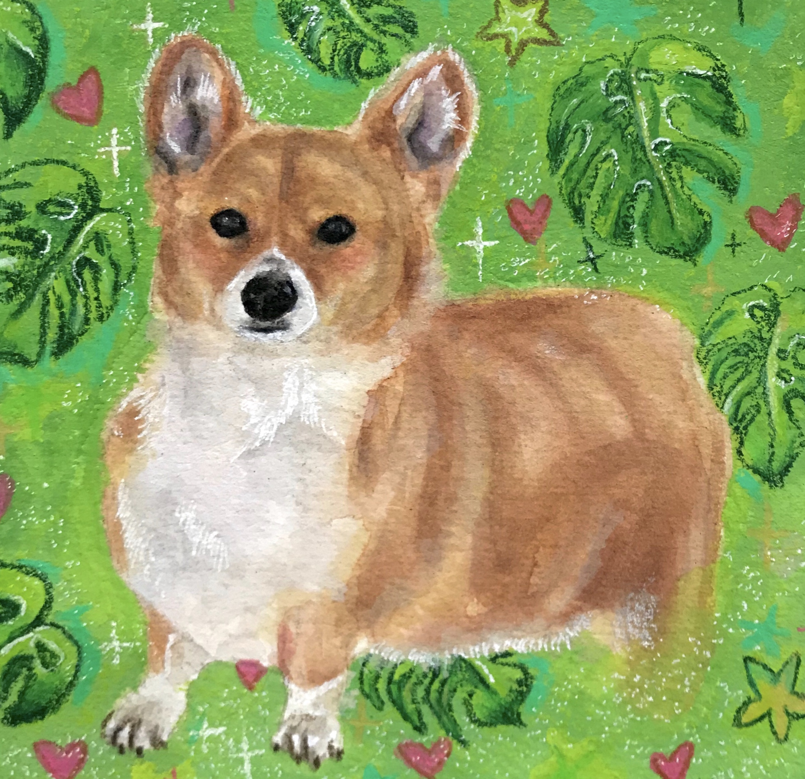
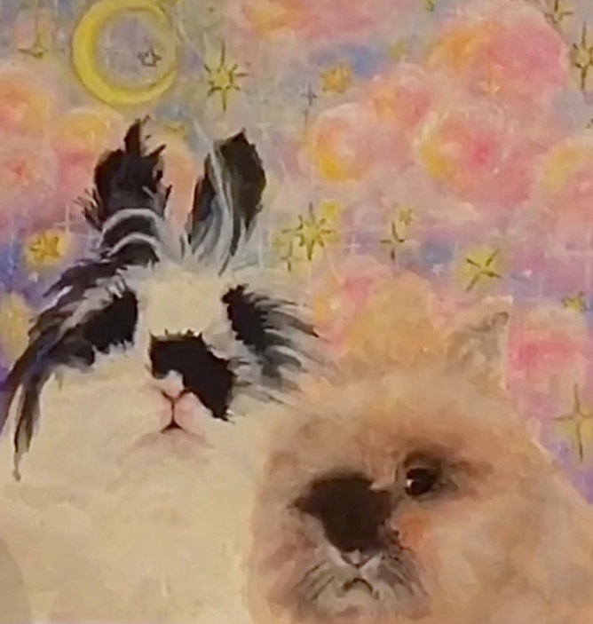

Gallery
This page is to present all the past works I’ve done, both commissions and personal pieces. If you like a certain style and want to commission a piece with said style, make sure to refer to the piece when emailing me!

I drew this picture in one of my art classes. It was a project to draw a portrait of anyone and I found this girl on Instagram.

This is my cat, Milo. I spent multiple days drawing and painting this picture of him. I got a good response from this piece and decided to make prints of him to sell.
I did this little drawing for my friend for her birthday and it is what I drew in the card

This picture was also from an art class I have taken. the goal was to use simple colors
I did this picture for fun. I just started to draw something that sounded good to eat at the time.
This picture is a commission drawing that a girl asked me to draw of her cat

I did this Drawing of this corgi as a commission drawing. It took me about 6 to seven hours to complete.

This drawing I did of my sister's cat is special to me. She had to leave her cat behind with us due to here moving to a place that can't have animals. so I painted this for her to keep.
This is another commission drawing I did Also took me 5 to 6 hours to complete.
I got a request to draw someone's cat but with some vampire characteristics to it.
This is a another pet commission drawing that I was asked to do.
